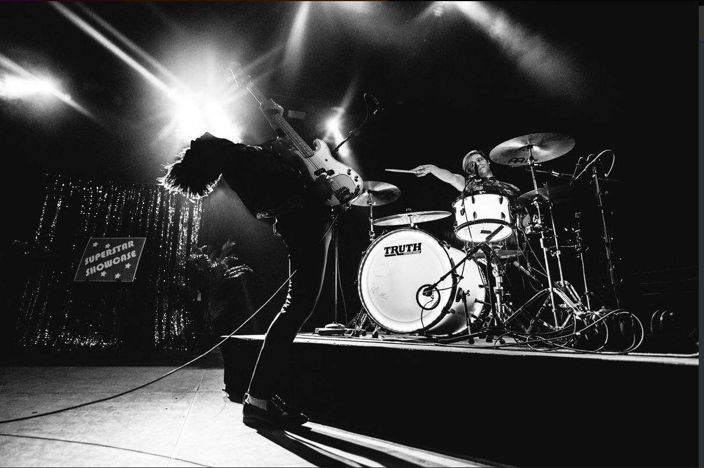

DALLON WEEEKES

Dallon James Weekes born May 4, 1981 is an American singer,
songwriter, musician, and record producer.
He is best known as a member of Panic! at the Disco from 2009 to 2017,
performing in the band as a bassist, keyboardist, backing vocalist, and songwriter.
